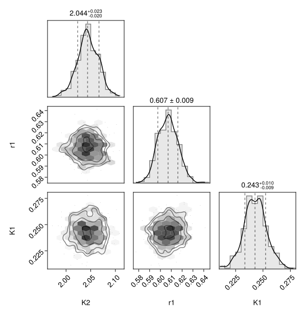
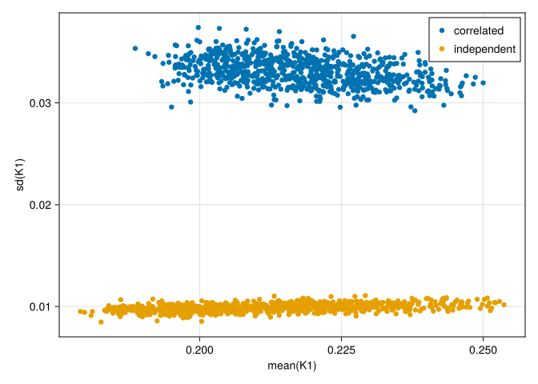

How to model independent parameter-blocks in the posterior
This guide shows how to configure independent parameter-blocks in the correlations of the posterior.
Motivation
Modelling all correlations among global and site PBM-parameters respectively requires many degrees of freedom.
To decrease the number of parameters to estimate, HVI allows to decompose the correlations into independent sub-blocks of parameters.
First load necessary packages.
using HybridVariationalInference
using ComponentArrays: ComponentArrays as CA
using Bijectors
using SimpleChains
using MLUtils
using JLD2
using Random
using CairoMakie
using PairPlots # scatterplot matricesThis tutorial reuses and modifies the fitted object saved at the end of the Basic workflow without GPU tutorial.
fname = "intermediate/basic_cpu_results.jld2"
print(abspath(fname))
prob = probo_cor = load(fname, "probo");Specifying blocks in correlation structure
HVI models the posterior of the parameters at unconstrained scale using a multivariate normal distribution. It estimates a parameterization of the associated blocks in the correlation matrx and requires a specification of the block-structure.
This is done by specifying the positions of the end of the blocks for the global (P) and the site-specific parameters (M) respectively using a NamedTuple of integer vectors.
The defaults specifies a single entry, meaning, there is only one big block respectively, spanning all parameters.
cor_ends0 = (P=[length(prob.θP)], M=[length(prob.θM)])(P = [1], M = [2])The following specification models one-entry blocks for each each parameter in the correlation block the site parameters, i.e. treating all parameters independently with not modelling any correlations between them.
cor_ends = (P=[length(prob.θP)], M=1:length(prob.θM))(P = [1], M = 1:2)Reinitialize parameters for the posterior approximation.
HVI uses additional fitted parameters to represent the means and the covariance matrix of the posterior distribution of model parameters. With fewer correlations, also the number of those parameters changes, and those parameters must be reinitialized after changing the block structure in the correlation matrix.
Here, we obtain construct initial estimates. using init_hybrid_ϕunc
ϕunc = init_hybrid_ϕunc(cor_ends, zero(eltype(prob.θM)))In this two-site parameter case, the the blocked structure saves only one degree of freedom:
length(ϕunc), length(probo_cor.ϕunc)(5, 6)Update the problem and redo the inversion
prob_ind = HybridProblem(prob; cor_ends, ϕunc)using OptimizationOptimisers
import Zygote
solver = HybridPosteriorSolver(; alg=Adam(0.02), n_MC=3)
(; probo) = solve(prob_ind, solver;
callback = callback_loss(100), # output during fitting
epochs = 20,
); probo_ind = probo;Compare the correated vs. uncorrelated posterior
First, draw a sample.
n_sample_pred = 400
(y_cor, θsP_cor, θsMs_cor) = (; y, θsP, θsMs) = predict_hvi(
Random.default_rng(), probo_cor; n_sample_pred)
(y_ind, θsP_ind, θsMs_ind) = (; y, θsP, θsMs) = predict_hvi(
Random.default_rng(), probo_ind; n_sample_pred)i_site = 1
θ1 = vcat(θsP_ind, θsMs_ind[i_site,:,:])
θ1_nt = NamedTuple(k => CA.getdata(θ1[k,:]) for k in keys(θ1[:,1])) #
plt = pairplot(θ1_nt)
The corner plot of the independent-parameters estimate shows no correlations between site parameters, r₁ and K₁.
i_out = 4
fig = Figure(); ax = Axis(fig[1,1], xlabel="mean(y)",ylabel="sd(y)")
ymean_cor = [mean(y_cor[i_out,s,:]) for s in axes(y_cor, 2)]
ysd_cor = [std(y_cor[i_out,s,:]) for s in axes(y_cor, 2)]
scatter!(ax, ymean_cor, ysd_cor, label="correlated")
ymean_ind = [mean(y_ind[i_out,s,:]) for s in axes(y_ind, 2)]
ysd_ind = [std(y_ind[i_out,s,:]) for s in axes(y_ind, 2)]
scatter!(ax, ymean_ind, ysd_ind, label="independent")
axislegend(ax, unique=true)
fig
plot_sd_vs_mean = (par) -> begin
fig = Figure(); ax = Axis(fig[1,1], xlabel="mean($par)",ylabel="sd($par)")
θmean_cor = [mean(θsMs_cor[s,par,:]) for s in axes(θsMs_cor, 1)]
θsd_cor = [std(θsMs_cor[s,par,:]) for s in axes(θsMs_cor, 1)]
scatter!(ax, θmean_cor, θsd_cor, label="correlated")
θmean_ind = [mean(θsMs_ind[s,par,:]) for s in axes(θsMs_ind, 1)]
θsd_ind = [std(θsMs_ind[s,par,:]) for s in axes(θsMs_ind, 1)]
scatter!(ax, θmean_ind, θsd_ind, label="independent")
axislegend(ax, unique=true)
fig
end
plot_sd_vs_mean(:K1)
The inversion that neglects correlations among site parameters results in the same magnitude of estimated uncertainty of predictions. However, the uncertainty of the model parameters is severely underestimated in this example.